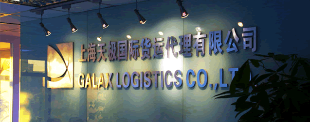

天极服务
系统化控制风险
管理风格严谨
严格控制作业流程
我们始终改进流程并及时学习与交流。
选择最强合作伙伴
公司在船公司、仓库、车队、报关行等运输环节均严格选择业内最强合作伙伴以保证服务水准。

天极公司简介
上海天极国际货运代理有限公司是商务部批准的一级国际货运代理，并拥有交通部颁发的无船承运人资格证书(MOC-NV02781)，同时也是全球最大的货运联盟WCA的成员之一。
服务优势
公司对外承接海运进出口货物的国际运输代理业务，包括订舱、中转、仓储、报关、内陆运输、多式联运及相关咨询业务。公司在处理国际海运货物和国际空运货物方面有着深厚的了解。公司拥有一批经验丰富的员工，结合全球的网络系统，为广大客户提供综合性、专业性的物流服务！
上海天极国际货运代理有限公司凭借完善的全球网络和代理体系以及引以为豪的专业团队会协助您解决在物流领域遇到的问题。
业务范围
公司主力航线为中国至中南美及加勒比海航线,与多家航运公司长年的协议运价能给我们的客户带来最实质性优惠。
中国至中南美航线的服务是我司发展和完善的主要航线，与中南美各地优秀的代理间长期的合作，为广大客户提供可靠，高效的服务网络是我司的过去，当前，及将来的最重要的职能。
同时公司长期服务于众多化工出口企业，对于化学品，尤其是危险品的运输拥有丰富的经验及一支优秀的团队。
| 合作 伙伴 |
上海天极国际货运代理有限公司 版权所有 沪ICP备09016760号 COPYRIGHT 2011 GALAX LOGISTICS CO.,LTD..ALL RIGHTS RESERVED